The mast: three options that flow from the chair into the F3 headrest
The headrest is locked: F3 pad, K2 tapered tenon with captive nuts, the 2-rod carbon spine, and the W1 button pod at 12/20/28°. These three options change only what is below the pad's chin. All are drawn on the real chair at height H50 and reach 0, for review only.
What all three share
- The top is the locked K2 joint. The pad still slides down onto the same tenon and is locked by the 2 angled M3 screws under the chin. Every option was checked against the pad, the foam, the chair, the lock screws and the screwdriver path, and the pad's slide-on path. All clashes are 0.
- The chin flare. Under the pad the mast widens into the chin and follows the pad's back curve. The bottom of the pad sits on it, so it reads as one shape, and the flare carries the head's weight. The lock screws stay reachable.
- A new receiver on the chair (printed into top_back, as before). The housing behind the backrest is now a smooth lens that fades into the back face, like a spine running down. Inside is the same 56 × 26 socket, 45 mm deep.
- Two M5 bolts now go in from behind at the centre, between the carbon pieces, into nuts that slide into the plug. The old side-to-side bolts would have hit the new rod positions.
- Nothing sticks out behind the chair below the top edge except the receiver and the two bolt heads, so it still clears the car wall.
Fixed: no more ledges in the air under the foot
The first version's foot (58 mm each side) was wider than what it sat on, so its back corners hung over nothing. Now the receiver housing behind the backrest grows up the back and ends exactly on the foot's outline. I checked by slicing just under the joint: the foot has 0 mm² over air. From behind, the receiver and foot read as one shape rising out of the backrest. There is only a 0.3 mm parting line where the mast lifts out.
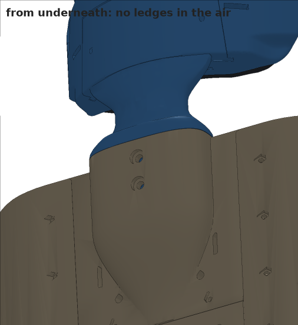
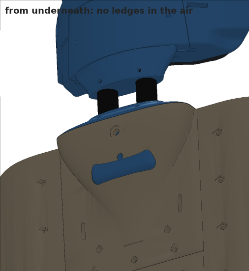
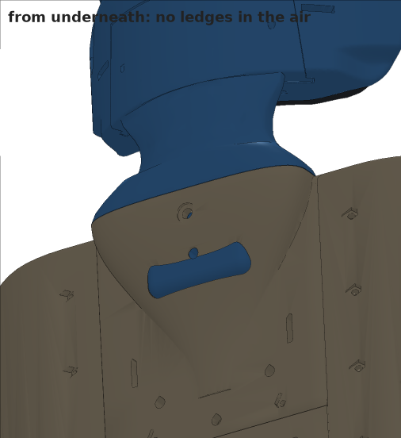
The long-neck version (H100, the tallest height)
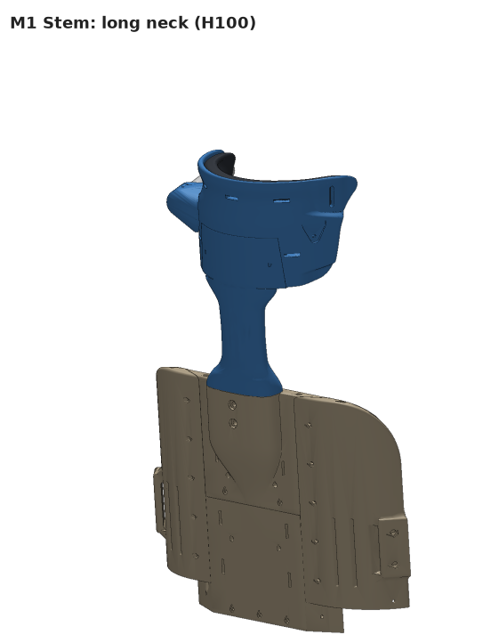
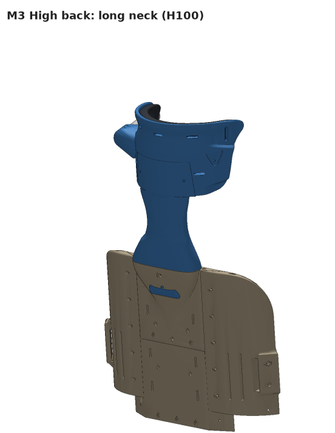
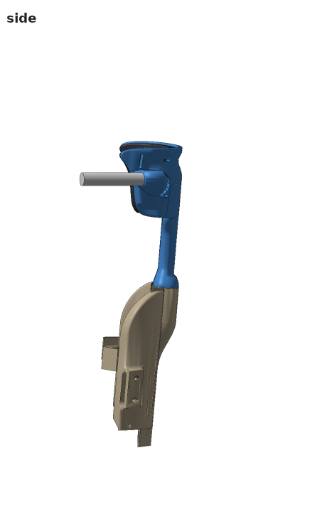
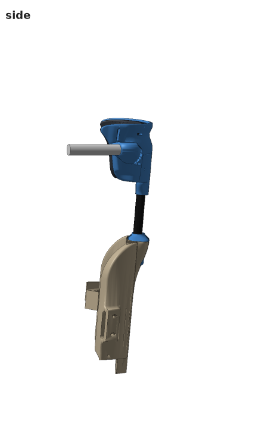
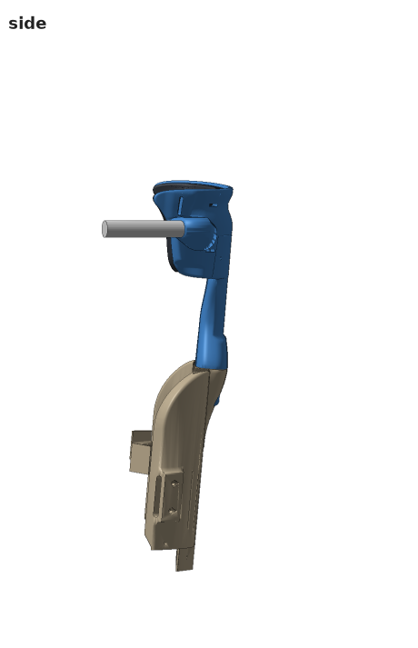
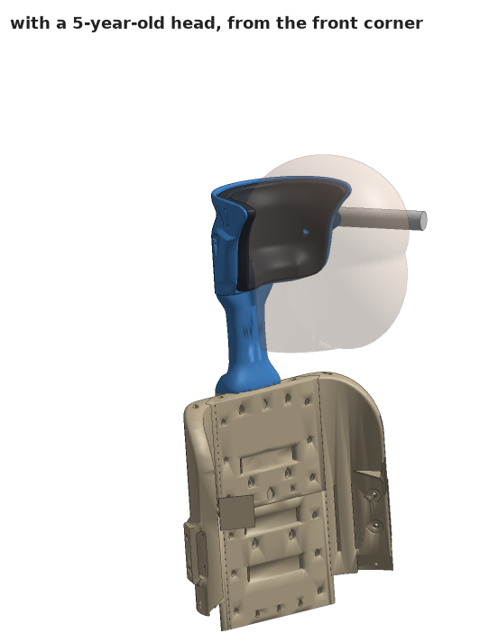
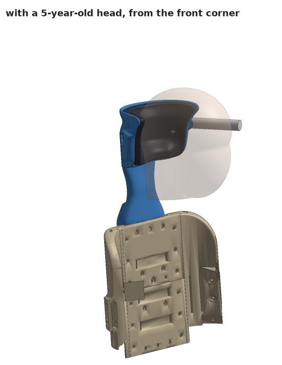
At full height M1 reads as a slim stem, M2 as two posts with air between them, and M3 as a solid neck that continues the backrest. The strength table below is for exactly this H100 case.
M1 Stem: one printed piece
The column flares into the pad's chin at the top and into a saddle on the backrest's top edge at the bottom, with a slight waist in between. It is the evolution of today's mast.
- 2 × Ø8 carbon rods run from the socket floor up into the pad. They add about 30% of the bending stiffness and hold the pad if the plastic ever cracks.
- Each child height (H0 to H100) is its own print, as today.
- Volume 111 to 249 cm³. About 2 to 3 h per mast (estimated from earlier slices).
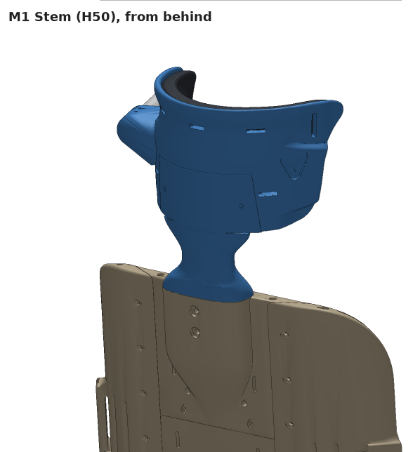
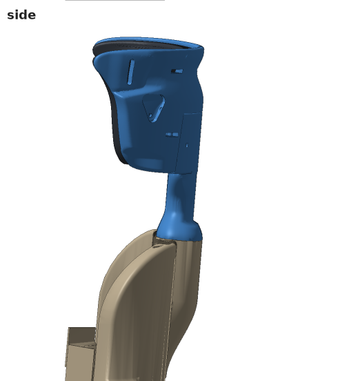
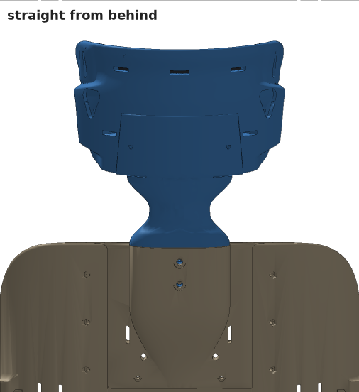
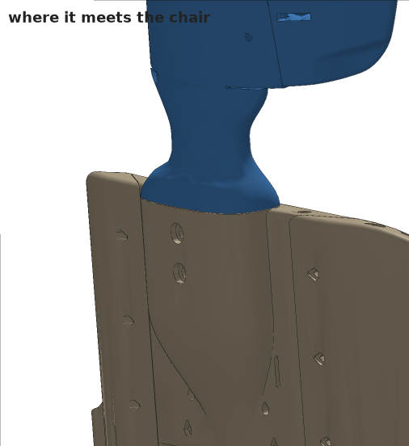
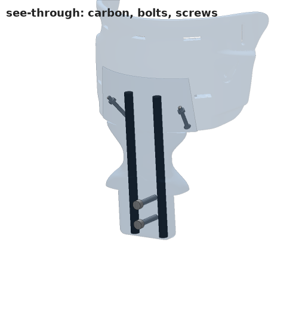
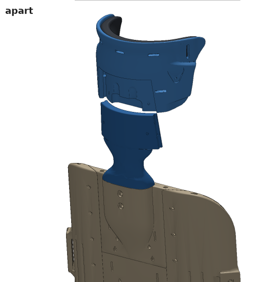
M2 Twin carbon posts: the carbon is the structure
Two exposed 16 × 12 mm carbon tubes run between a slim printed foot on the backrest top and a printed head under the pad's chin. It looks like a car headrest's posts: light, with the carbon on show.
- The same 2 prints for every child. Height is set by the tube length (112 mm at H50, 162 mm at H100), so a growing child needs new tubes, not a new print.
- Each tube bottoms on its socket floor, so the shape carries the load. An M3 pinch screw at each end only locks it.
- The tubes replace the Ø8 rods. The head's spine bosses stay solid and fill the pad's sockets.
- Limit: below about H35 there is no room for visible tubes. Those children get the short M1 instead.
- Volume: foot 48 cm³ plus head 89 cm³ at every height, about 2.3 h for both. Tubes cost about $10 for a 500 mm length.
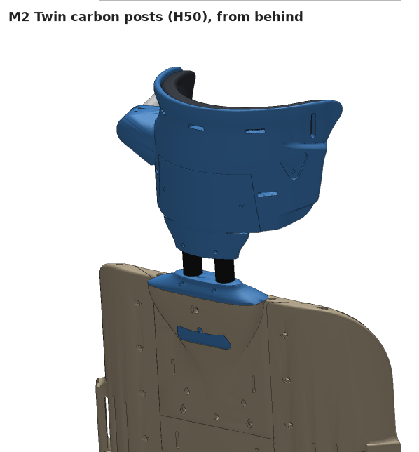
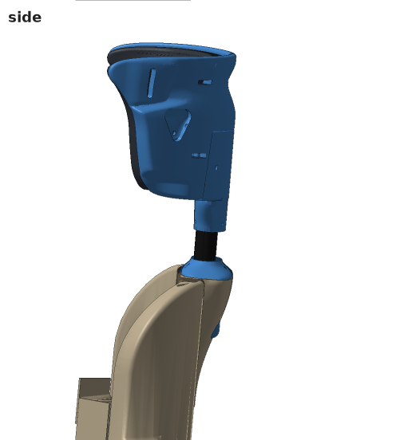
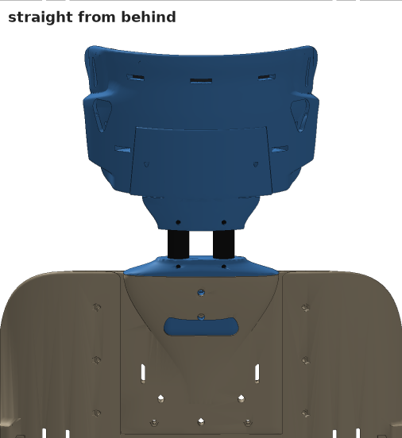
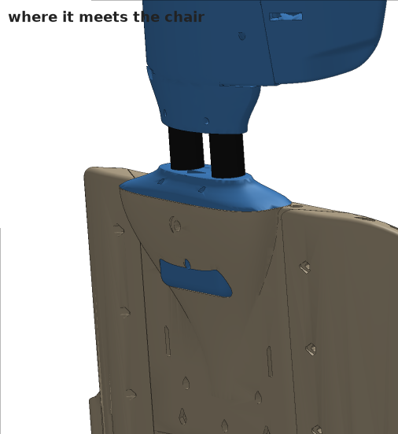
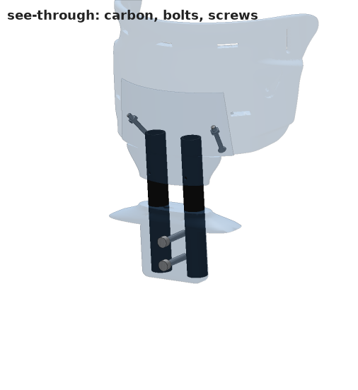
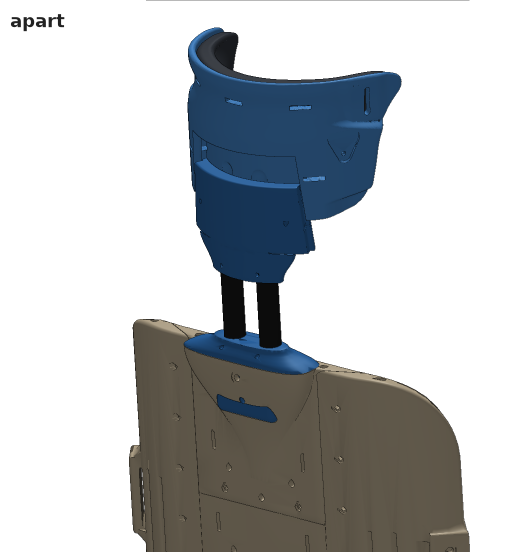
M3 High back: the backrest grows up into the headrest
Wide, soft shoulders over the backrest's top edge narrow into a waist, then flare into the chin. From behind it reads like a car seat with a built-in headrest.
- Same 2 × Ø8 rods, receiver and bolts as M1.
- The stiffest printed option: half the flex of M1 at H100.
- The heaviest print: 115 to 340 cm³, about 2 to 4 h. Like M1, each height is its own print.
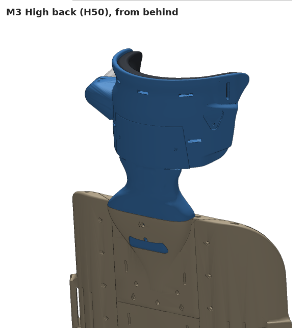
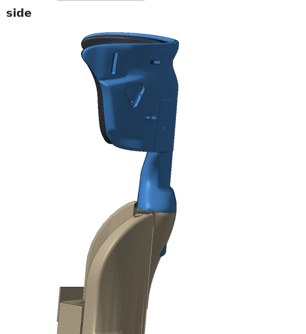
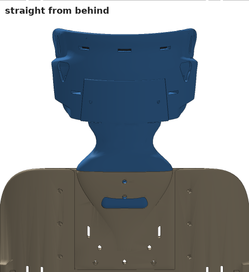
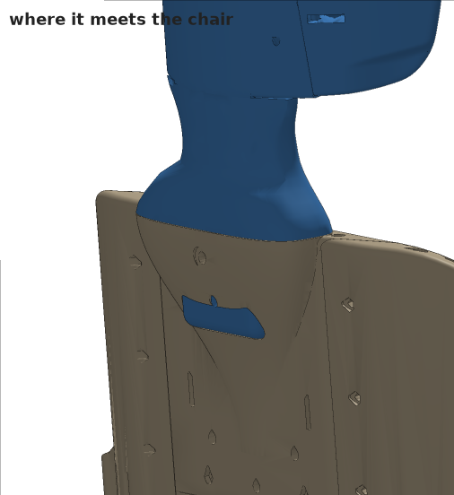
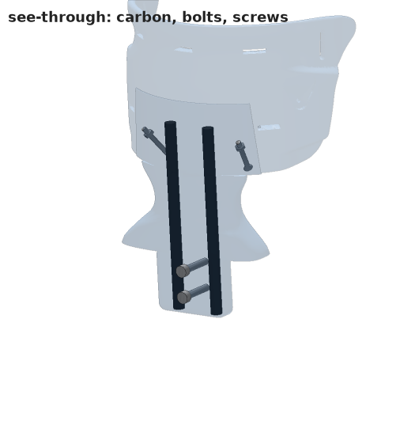
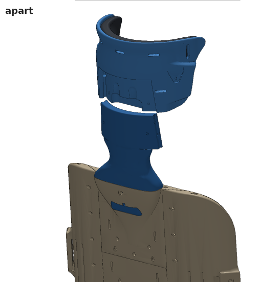
All heights
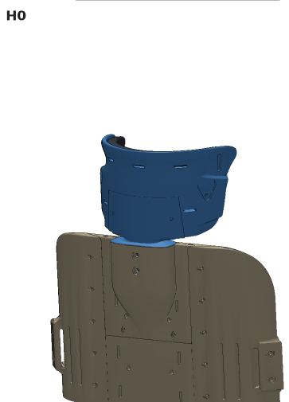
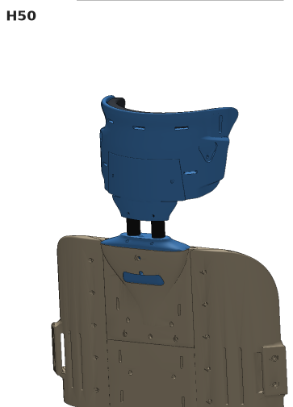
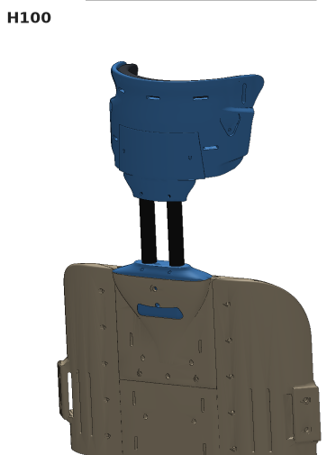
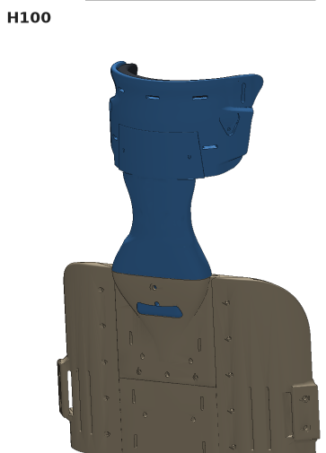
Strength rating (carbon included)
I sliced each mast every 2 mm and used the real sections. The carbon bends with the plastic, so their stiffnesses add; no glue is assumed. PETG is taken as 1.9 GPa and 40 MPa along the layers (the mast prints lying on its back). Carbon is taken as 120 GPa for the rods and 70 GPa for the tubes, a conservative value.
Load cases: a 300 N knock backwards at the pad centre; a 250 N side bash at the temple; a 150 N push backwards from the head, for flex. The worst case is H100.
| M1 Stem | M2 Twin posts | M3 High back | |
|---|---|---|---|
| Plastic safety factor, 300 N knock (H50 / H100) | 6.4 / 4.4 | 19.9 / 13.7 | 6.4 / 4.4 |
| Side bash safety factor (H50 / H100) | 8.7 / 6.3 | 11.1 / 8.0 | 8.7 / 6.3 |
| Pad moves back under a 150 N push (H100) | 1.2 mm | 0.6 mm | 0.55 mm |
| Pad moves sideways under a 250 N bash (H100) | 0.9 mm | 1.2 mm | 0.25 mm |
| Carbon stress in the knock (safety factor) | 358 MPa (4.2) | 87 MPa (5.7) | 358 MPa (4.2) |
| If the plastic cracks, can the carbon alone hold the pad? | yes, SF 3.1 | the carbon is the main structure, SF 5.7 | yes, SF 3.1 |
| Share of bending stiffness from the carbon | ~30% | ~85–90% | ~20% |
| 1 part per height, 111–249 cm³ | 2 parts for all heights, 137 cm³ | 1 part per height, 115–340 cm³ | |
| Rating | ★★★☆ strong enough, simplest | ★★★★ strongest, lightest | ★★★½ stiffest printed option, heaviest |
- For M1 and M3 the weakest spot is not the visible shape. It is the same place in both: the 56 × 26 plug where it leaves the chair socket. That is why their safety factors are identical. M3's extra plastic buys stiffness (less flex), not strength.
- In M2 the tubes take most of the load, and the plastic loafs (SF 14 or more). The tube sockets see only about 3–4 MPa of bearing pressure.
- Every option is at least 4× the 300 N knock, and the carbon alone is a 3× backup.
- These are hand-calculation numbers. The real check is still the hang and pull test on a printed part.
My recommendation
M2 twin carbon posts. It is the strongest and lightest, and the same two prints fit every child (cut the tubes), so a growing child needs about $5 of new tubes instead of a new 3 h print. It also shows the carbon spine you asked for. For the lowest heights (H0/H25) use a short M1.
If you want the headrest to read as one solid piece with no visible carbon, pick M1. Pick M3 if the stiff, car-seat look is worth the extra plastic.
Locked in from the headrest
- Pad: F3 (shield back, thin top, 7 mm round the strap slots). Joint: K2 taper with captive nuts plus 2 M3×30 from under the chin. Spine: 2 × Ø8 at ±16.
- Button: W1 pod at 12 / 20 / 28° (default 20°), pitch −3°, plus a flush blank. The triangle pocket gets deepened from 4 to 8 mm when the parts are integrated.
- Still open: S/L pad sizes on the same mount, then the print guide (upright print, 15 kg strap hang test).